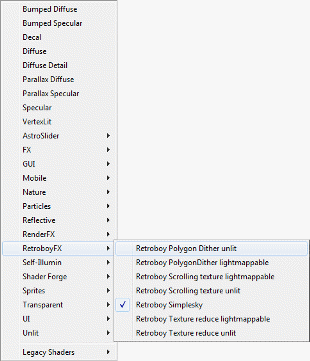

About
RetroBoyFX is a set of shaders designed to simulate the style of retro, 4-bit colour schemes.
RetroBoyFX was created using ShaderForge, an excellent plugin for Unity.
I highly recommend purchasing ShaderForge and supporting its developer as it is a very powerful and easy to use tool.
http://acegikmo.com/shaderforge/
https://www.assetstore.unity3d.com/#/content/14147
Shader
Set up
To add RetroBoyFX shaders to your project, navigate to the retro boy shader directory from the shader drop down menu on your material.

Image
set up
RetroBoyFX work best when textures have some slightly different settings.
See below:

Changing the filter mode to point, will give the pixels in the image a sharp retro look and will help simulate the 4-bit style.
Shaders explained
RetroBoy dither unlit/lightmappable
These 2 shaders simulate a 3d dither shading effect similar to that found on 3d titles on the gameboy. As the names of the shaders suggest, one is for unlit lighting situations and the other is for when lightmapping is required. 3 textures are used to mask between two colours. Each texture masks a different vector direction (x,y, or z).
Base Colour : Sets the base colour
Secondary Colour: Sets the secondary colour (using the below texture slots as a mask)
Dither texture 01: Place a texture mask here to mask between the base and secondary colours.
Dither texture 02: Place a texture mask here to mask between the base and secondary colours.
Dither texture 02: Place a texture mask here to mask between the base and secondary colours.
Dither tile: This value changes the tile amount of the mask textures, allowing for finer details.
Dither blend: This values changes the blend harshness between the 3 textures.
Retroboy texture reduced unlit & texture reduced lighmappable
These 2 shaders take a regular texture or photo and can process it to look like different gameboy games. The shader crunches the colours down and uses the image as a basis to blend between two colours. The shader can also pixelate the image to give a chunkier, retro feel.
Diffuse: This is the slot for your texture that you wish to use.
Colour Reduce: This value will crunch the image's colours down.
Colour 01: This chooses the main colour of the image.
Colour 02: This chooses the secondary colour of the image.
Pixelate: This value will increase the size of each pixel.
Contrast: This can modify the contrast between the two colours.
Retroboy
scrolling texture unlit/scrolling lightmappable
This shader is the same as Retroboy texture reduced unlit & texture reduced lighmappable but has 2 extra values for scrolling the texture.
X scroll speed: This value changes the scroll speed of the texture on the X axis.
Y scroll speed: This value changes the scroll speed of the texture on the Y axis.
*Note – both the above values can also have a negative value for a different scroll direction.
Retroboy
simplesky
This shader is used to create simple skybox gradients. It uses a greyscale blend texture as well as colour reduction values to create the banded effect. The shader will automatically UV onto a simple object.

Colour
01: This chooses the primary colour of the sky.
Colour 02:
This chooses the primary colour of the sky.
Gradient: This texture defines how the 2 above colours blend.
Banding: This crunches down the colours in the gradient, creating the banded effect.
Global tile: This value tiles the gradient texture.
Offset: This value offsets the texture, allowing the material to cover any shape.
Other notes:
The dither textures used on the dither shader don't have to be the same in each texture slot – try different combinations.
Try changing the value of the tiling value on any of the shaders with extreme numbers to get some interesting effects, such as scanlines or even strobing.
Try random colour combinations with the sky shader as well as different gradients for different vibes.
These shaders are designed to be used on objects but you could add this shader to a plane and place a render to texture slot into the texture slots to give some interesting post process effects.
Contact
If you have any questions or feedback, feel free to email me here:
and please follow me on twitter for more asset updates.